Advanced Circumplex Visualization
Source:vignettes/advanced-visualization.Rmd
advanced-visualization.RmdLevel: Advanced. Read “Structure Tests and Ipsatization” first.
1. Overview
The ssm_plot_circle(), ssm_plot_curve(),
ssm_plot_contrast(), and ssm_plot_trajectory()
functions cover the most common circumplex figures. But they each
produce a finished plot with a fixed set of layers. Sometimes you want
more control. You may want to overlay individual respondents on a group
profile, or to zoom in on a band of amplitudes. Or you may want to
restyle the points, or to place several circumplex panels side by side.
vignette("introduction-to-ssm-analysis") defines the SSM
terms used here, such as amplitude and displacement.
To make that possible, circumplex exposes the building
blocks that the built-in plots are themselves made of. These are
ordinary ggplot2
components, so you compose them with + and combine them
freely with any other ggplot2 layers, scales, and
themes:
-
coord_circumplex()is the coordinate system. It maps thedisplacementaesthetic (degrees) onto the angle and theamplitudeaesthetic onto the radius. It also owns the amplitude-to-radius scaling for the whole plot. -
ggcircumplex()assembles the empty circular canvas: the coordinate system plus the amplitude rings, displacement spokes, and scale labels. -
geom_ssm_point()andgeom_ssm_arc()are the layers that place profile points and their confidence regions in the circle, taking amplitude and displacement directly as aesthetics. -
theme_circumplex()is the theme the canvas is drawn with. The rings and spokes are ordinary panel gridlines, so further theming restyles them. -
scale_x_circumplex()is a scale for the angle axis of linear circumplex plots. An example is the score-by-angle curve, with scale angle on a straight x-axis and score on the y-axis.
This vignette works through each of these and then combines them.
Section 2, “The circular canvas”, draws the empty canvas with
ggcircumplex(). Section 3, “The coordinate system”, builds
a figure from scratch with coord_circumplex(). Section 4,
“Placing SSM results in the circle”, adds profiles with
geom_ssm_point() and geom_ssm_arc(). Section
5, “Restyling the canvas”, themes it. Section 6, “Composing custom
layers”, adds respondents behind a group profile with
ssm_score(). Section 7, “Trajectories across occasions”,
draws profiles estimated at several occasions. Section 8, “The angle
axis for linear plots”, labels a linear axis with
scale_x_circumplex(). Section 9, “Relationship to the
built-in plots”, says how the built-in plots use these parts. The
Wrap-up lists what the page covered and names the next page, and the
References list the sources cited.
2. The circular canvas
ggcircumplex() returns a ggplot2 object
containing just the circular backdrop, with no data drawn on it yet. By
default it uses octant scales (eight scales placed 45° apart), labeled
by their angular position in degrees:
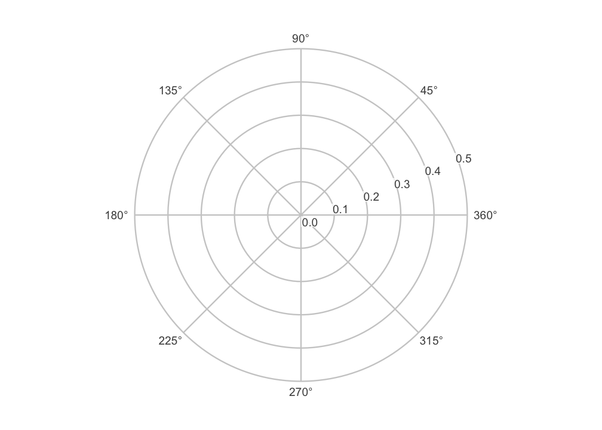
You can label the scales however you like. Passing a character vector labels the spokes in the order of the angles:
ggcircumplex(octants(), labels = PANO())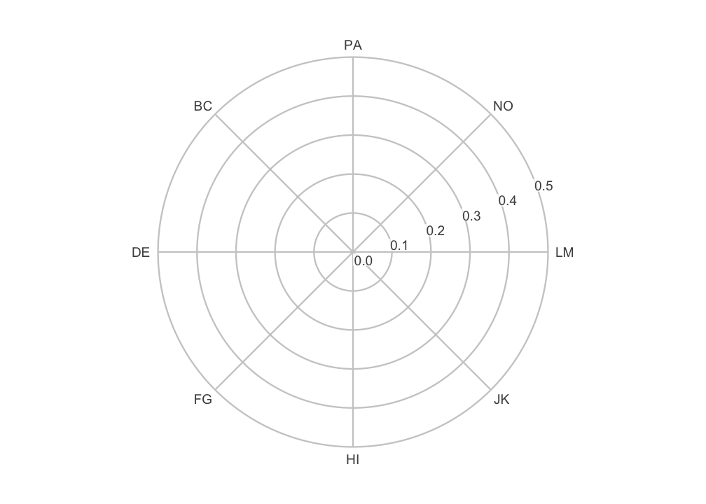
The labels need not be abbreviations. The octant scales also have full interpersonal names, which you can put on the spokes instead:
ggcircumplex(octants(), labels = csip$Scales$Label)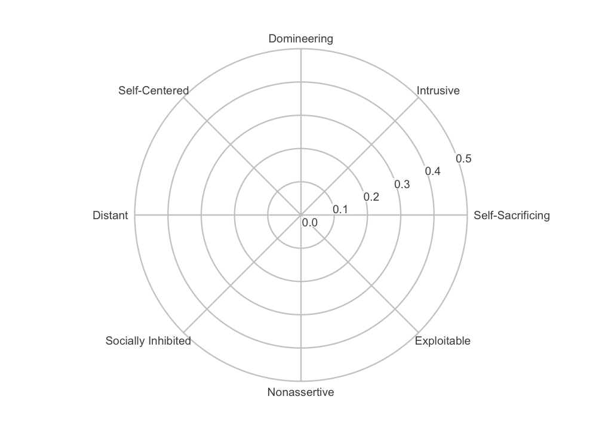
You may be working with one of the instruments bundled with the
package. If so, you can pass it directly with
ggcircumplex(instrument = csip). Its scale angles and
abbreviations are then taken from the instrument rather than typed by
hand.
Throughout, displacement runs counterclockwise from the right, and the 0/360 degree position is labeled 360.
3. The coordinate system
ggcircumplex() is a convenience wrapper. Underneath it,
the piece that makes a circumplex plot circular is
coord_circumplex(). You can add that to a bare
ggplot() yourself when you want to build a figure from
scratch. On top of the coordinate system you supply three things: an
x-scale carrying the spoke breaks and labels, a data layer, and the
theme.
results <- ssm_analyze(
jz2017,
scales = PANO(),
measures = c("NARPD", "ASPD")
)The table below shows five columns of results$results:
the profile label, the amplitude and displacement estimates, and the
amplitude interval. (The code that selects these columns is
omitted.)
#> Label a_est d_est a_lci a_uci
#> 1 NARPD 0.189244 108.9667 0.1537900 0.2271848
#> 2 ASPD 0.226159 115.9267 0.1905403 0.2640428
ggplot(results$results) +
coord_circumplex(amax = 0.3) +
scale_x_continuous(breaks = octants(), labels = PANO()) +
geom_ssm_point(aes(amplitude = a_est, displacement = d_est, fill = Label)) +
theme_circumplex()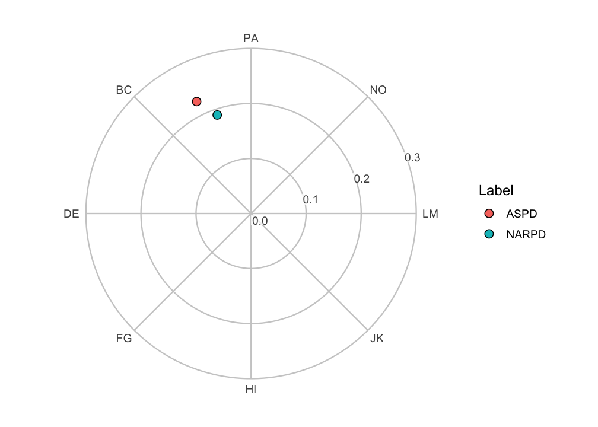
The scale_x_continuous() line is the one that tells the
coordinate system where the scale angles are. Without it, the spokes
would fall on ggplot2’s default breaks rather than on the
octants. Supplying those breaks and labels, along with the theme, is
what ggcircumplex() does on top of the coordinate system.
Build from the parts when you want to vary one of those pieces. Reach
for ggcircumplex() when you do not.
The coordinate system owns the amplitude-to-radius mapping. So
amax is set exactly once per plot, and the canvas and the
data layers cannot disagree about what a given radius means. (Earlier
versions of the package took an amax argument on each
layer. Those arguments are now deprecated and ignored, with a one-time
note.) Leaving amax = NULL trains it from the data, as
ssm_plot_circle() does.
Moving the center
By default, the center of the circle is amplitude 0. So radial
distance is proportional to amplitude, and the origin means “no
differentiation among the scales.” The center argument
moves that inner limit. This is useful when every profile sits in a
narrow band of amplitudes and the interesting variation is squeezed
against the rim:
ggplot(results$results) +
coord_circumplex(amax = 0.28, center = 0.15) +
scale_x_continuous(breaks = octants(), labels = PANO()) +
geom_ssm_point(aes(amplitude = a_est, displacement = d_est, fill = Label)) +
theme_circumplex()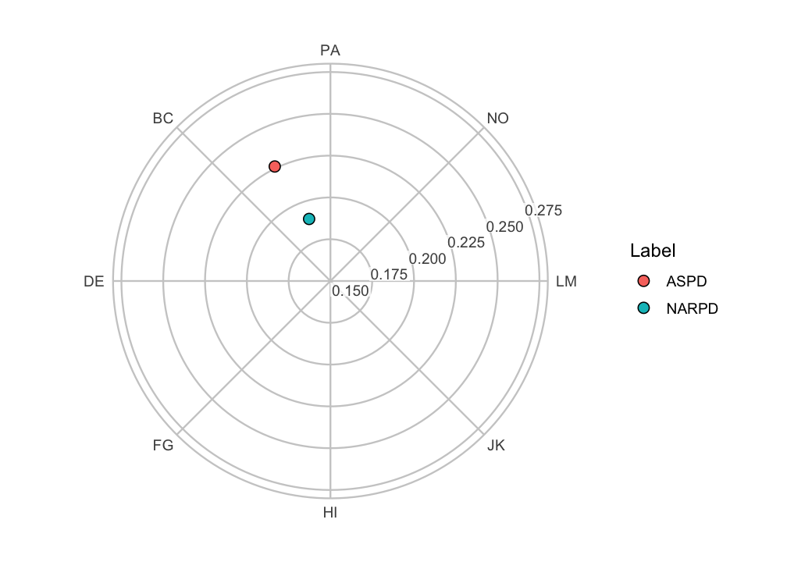
This is a zoom, and it changes how the figure should be read. With a nonzero center, radial distance is no longer proportional to amplitude. The origin no longer represents zero amplitude. So differences in radius are exaggerated relative to the default view. The amplitude ring labels still report the true amplitudes, and they are what the reader should be directed to. Use a nonzero center to resolve closely spaced profiles, and say so in the caption.
Moving the amplitude axis
The amplitude (radial) axis and its tick labels are placed
automatically in the widest gap between the displacement spokes. So they
never collide with a spoke label. ssm_plot_circle() and
plot() for a CPM fit go one step further and use the widest
gap that holds no plotted point. You can override the placement with
r_axis_angle, given as a displacement in degrees:
ggplot(results$results) +
coord_circumplex(amax = 0.3, r_axis_angle = 67.5) +
scale_x_continuous(breaks = octants(), labels = PANO()) +
geom_ssm_point(aes(amplitude = a_est, displacement = d_est, fill = Label)) +
theme_circumplex()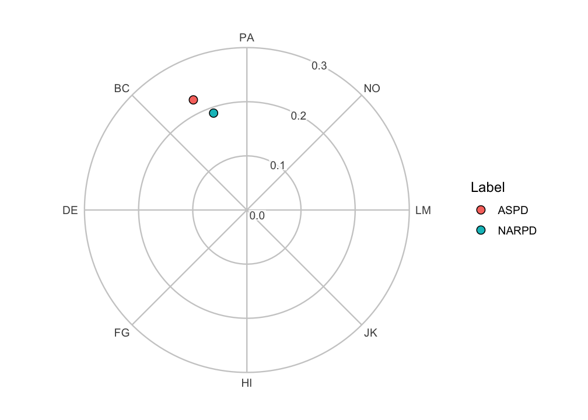
Note that these examples build the canvas from its parts: the
coordinate system, an x-scale carrying the spoke breaks and labels, and
the theme. They do not add a second coordinate system on top of
ggcircumplex(). If they did, ggplot2 would
replace the existing coordinate system and print a message.
4. Placing SSM results in the circle
Let’s draw the two-measure profile from above on a labeled canvas
ourselves, rather than calling ssm_plot_circle().
geom_ssm_point() places a point for each profile at its
amplitude (a_est) and displacement (d_est).
geom_ssm_arc() draws a wedge for each profile. The wedge
spans the profile’s amplitude confidence interval radially and its
displacement confidence interval angularly. Both take the SSM parameters
directly as aesthetics and handle the conversion into circular
coordinates internally. That includes wrap-around when a displacement
interval crosses the 0/360 degree boundary.
ggcircumplex(octants(), labels = PANO(), amax = 0.3) +
geom_ssm_arc(
data = results$results,
mapping = aes(
amplitude_min = a_lci, amplitude_max = a_uci,
displacement_min = d_lci, displacement_max = d_uci,
fill = Label
),
alpha = 0.4, color = NA
) +
geom_ssm_point(
data = results$results,
mapping = aes(amplitude = a_est, displacement = d_est, fill = Label)
)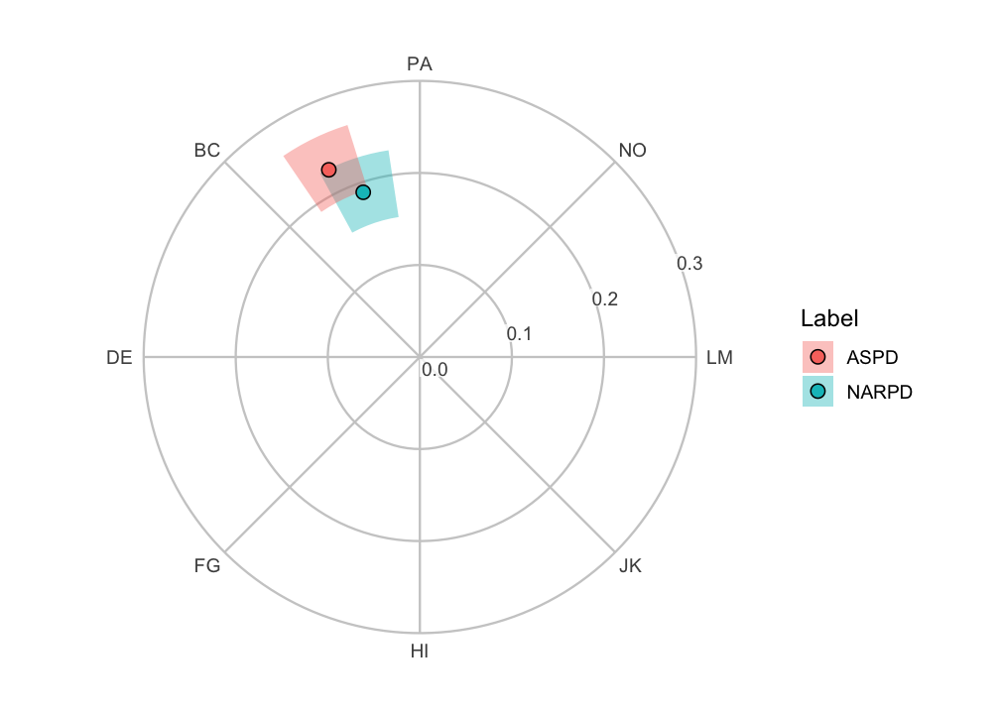
Each arc displays two separate confidence intervals for one profile at once. Its radial extent is the amplitude interval, and its angular extent is the displacement interval. It is a convenient way to show both intervals together. It is not a single joint confidence region with its own coverage level, and it is not a hypothesis test.
The angular extent in particular is a range of plausible
directions. Zero degrees is an arbitrary reference direction
rather than a null value. So, unlike a confidence interval for a linear
parameter (such as elevation), the angular extent should not be read as
a significance test. Displacement is only worth interpreting at all when
the amplitude interval is clearly above zero and the model fits
reasonably well. See the “Introduction to SSM Analysis” vignette and
?ssm_analyze.
5. Restyling the canvas
theme_circumplex() is the theme
ggcircumplex() applies. Because the rings, spokes, and
labels are themed panel furniture rather than drawn geometry, any
further theming reaches them. Adjust the base font size through the
theme, and restyle the gridlines with an ordinary theme()
call:
ggcircumplex(octants(), labels = PANO(), amax = 0.3) +
geom_ssm_point(
data = results$results,
mapping = aes(amplitude = a_est, displacement = d_est, fill = Label)
) +
theme_circumplex(base_size = 14) +
theme(
panel.grid.major = element_line(color = "steelblue", linetype = "dotted"),
legend.position = "bottom"
)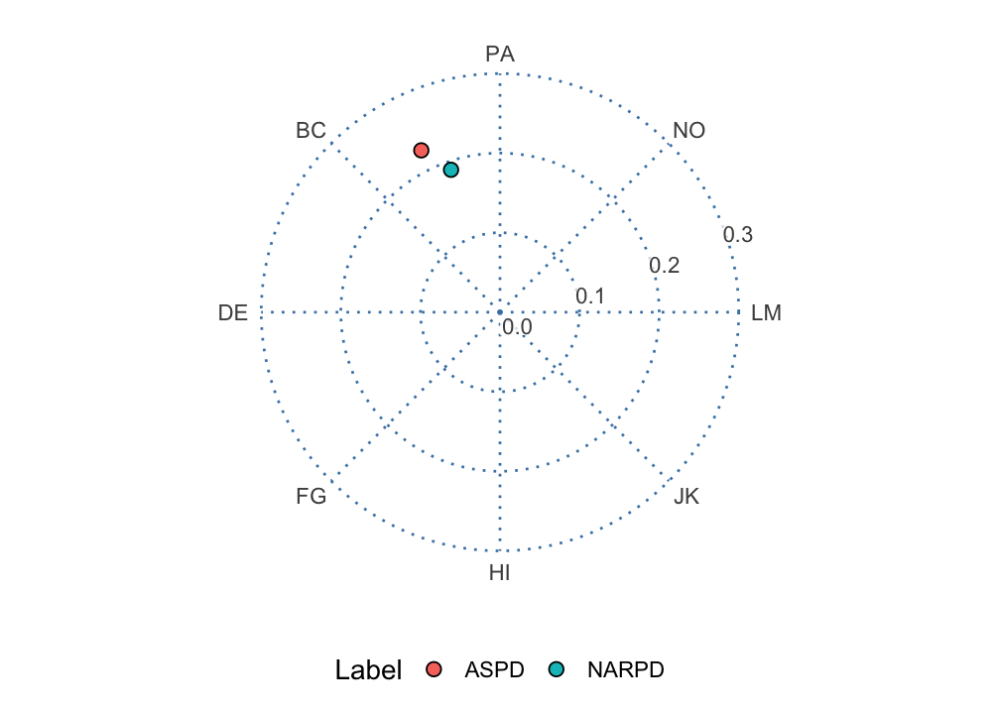
6. Composing custom layers
Because the canvas and geoms are ordinary ggplot2
objects, you can add anything else to them. A common request is to show
where individual respondents fall relative to a summary. We can compute
each person’s own amplitude and displacement with
ssm_score() and draw them as a faint cloud behind a
group-level point.
# Per-person SSM parameters for a subset of the sample
people <- ssm_score(
jz2017[1:100, ],
scales = PANO(),
append = FALSE
)A respondent whose scores are flat has no displacement.
ssm_score() returns NA for that person, with a
warning. So we drop the rows of people whose
Disp is NA and keep only the well-defined
profiles. (That code is omitted.)
# Group-level profile for the same subset
group <- ssm_analyze(jz2017[1:100, ], scales = PANO())
# The group amplitude is shorter than a typical individual amplitude
c(group = group$results$a_est, median_individual = median(people$Ampl))
#> group median_individual
#> 0.3651863 0.5189425
ggcircumplex(octants(), labels = PANO(), amax = 1.75) +
geom_ssm_point(
data = people,
mapping = aes(amplitude = Ampl, displacement = Disp),
fill = "grey70", size = 1.5, alpha = 0.6
) +
geom_ssm_point(
data = group$results,
mapping = aes(amplitude = a_est, displacement = d_est),
fill = "#0072B2", size = 4
)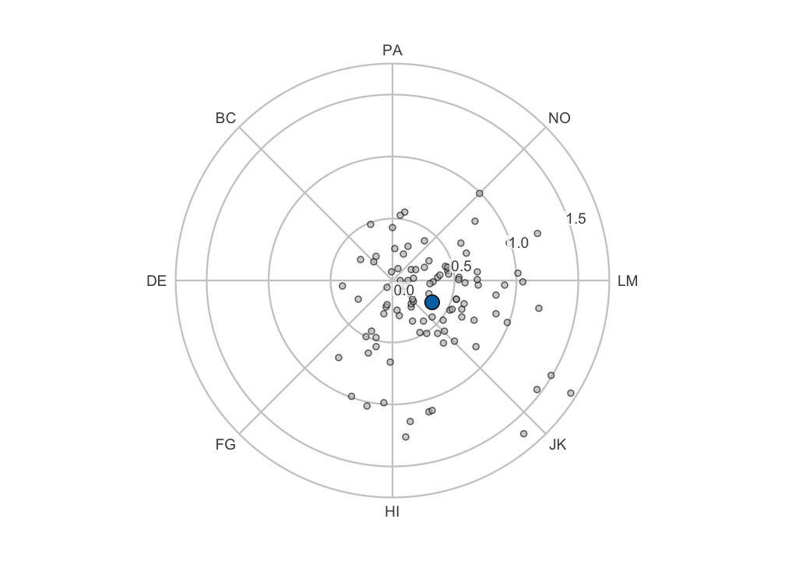
The individual points spread widely around the circle, while the
group summary sits close to the origin. That contrast is not an
artifact. The group profile is the SSM of the mean scale
scores. So its position is the average of the individual positions in
(x, y), the Cartesian coordinates of each profile’s point in the circle.
Averaging vectors that point in different directions yields an average
vector shorter than the typical individual vector. The two amplitudes
printed above show this. A group amplitude smaller than a typical
person’s therefore indicates disagreement about direction among
the respondents, not that each person’s profile is flat. None of the
built-in functions produce this picture directly. Any other
ggplot2 layer (text annotations, additional geoms,
faceting) can be added the same way.
7. Trajectories across occasions
Sometimes the same people are measured on the same scales at two or
more occasions. Then ssm_analyze_long() (for long data) or
ssm_analyze(occasions = ) (for wide data) estimates one SSM
profile per occasion. It resamples persons so that within-person
dependence across occasions is respected.
ssm_plot_trajectory() then draws each SSM parameter against
time.
The package ships a small simulated three-wave data set,
simulated_occasions. Its group profile rotates
counterclockwise across the 0/360 degree boundary, which is the case
worth seeing drawn. The data frame has one row per person per wave. Its
columns are an id, a wave factor with levels
T1, T2 and T3, and the eight
PANO() scales. ?simulated_occasions states how
it was simulated. We load it and estimate one profile per wave with
ssm_analyze_long():
data("simulated_occasions")
results_long <- ssm_analyze_long(
simulated_occasions,
scales = PANO(),
id = "id",
occasion = "wave"
)The table below shows five columns of
results_long$results: the occasion, the amplitude and
displacement estimates, and the displacement interval. (The code that
selects these columns is omitted.)
#> Occasion a_est d_est d_lci d_uci
#> 1 T1 0.5707423 332.41252 329.10979 335.70188
#> 2 T2 0.5968632 354.84909 351.81938 357.84738
#> 3 T3 0.5959438 21.05834 17.95188 24.08043
ssm_plot_trajectory(results_long, drop_xy = TRUE)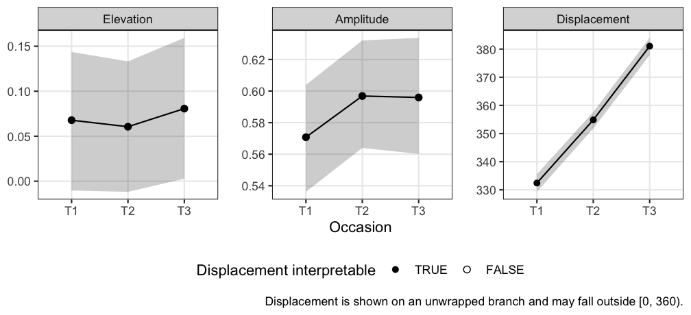
Two things about the displacement panel are worth reading carefully. First, it is drawn on an unwrapped branch, which lets angles go past 360 (or below 0) so that the line stays continuous. The profile crosses the 0/360 boundary between the second and third wave. Rather than jumping a full turn, the panel continues past 360, so values outside [0, 360) are expected there.
Second, the occasion order comes from the data rather than from the
plot. For a character occasion column, it is first-appearance order. For
a factor, it is the factor’s level order. Note that
factor() sorts its levels alphabetically by default, which
would place T10 before T2. So if your occasion
column is a factor, set its levels in temporal order.
The unwrap carries an assumption that no data can check: that the profile rotates less than a half-turn between consecutive occasions. Waves that are far apart in time, or a series with a gap, could rotate further than that. Such a rotation would be drawn as the shorter rotation regardless. So read widely spaced occasions with that in mind.
A time point’s amplitude interval can be too close to zero for its displacement to be interpretable. Such a time point is drawn as a hollow point. The hollow point marks an interpretability precondition, not a significance test.
drop_xy = TRUE above omits the X-value and Y-value
panels (the
and
coordinates of each profile), leaving elevation, amplitude, and
displacement.
The bands are the per-occasion confidence intervals, one per time
point. They are not a simultaneous confidence band for the trajectory as
a whole. Overlap (or its absence) between two occasions’ bands is not a
test of change between them. For that, estimate the contrast directly
(see ?ssm_analyze and
ssm_plot_contrast()).
ssm_plot_trajectory() also accepts a trajectory table.
This is a data frame of
a_est/a_lci/a_uci and
d_est/d_lci/d_uci triples at
numeric time points. With it, you plot a model-based trajectory
evaluated from a fitted growth model, rather than one estimated
separately at each wave. That workflow is the subject of the “Growth
Models on SSM Parameters” vignette.
The same change as movement on the circle
The panels above show each parameter against time separately. That is
the right figure for reading a confidence interval, but a poor one for
seeing motion. The amplitude and displacement of a single
occasion are split across two panels. geom_ssm_path() draws
the same series as a path on the circular canvas, so a change in
(amplitude, displacement) reads as movement through circumplex
space.
ggplot() +
# The amplitude axis goes in the 45-90 gap, clear of the three occasions
coord_circumplex(amax = 0.8, r_axis_angle = 67.5) +
scale_x_continuous(breaks = octants(), labels = PANO()) +
theme_circumplex() +
geom_ssm_point(
data = results_long$results,
mapping = aes(amplitude = a_est, displacement = d_est),
size = 2
) +
# Drawn after the points so the terminal arrowhead is not covered by the
# final occasion's marker, and sized to clear it
geom_ssm_path(
data = results_long$results,
mapping = aes(amplitude = a_est, displacement = d_est),
arrow = arrow(length = unit(0.18, "inches"), type = "closed"),
linewidth = 0.7
)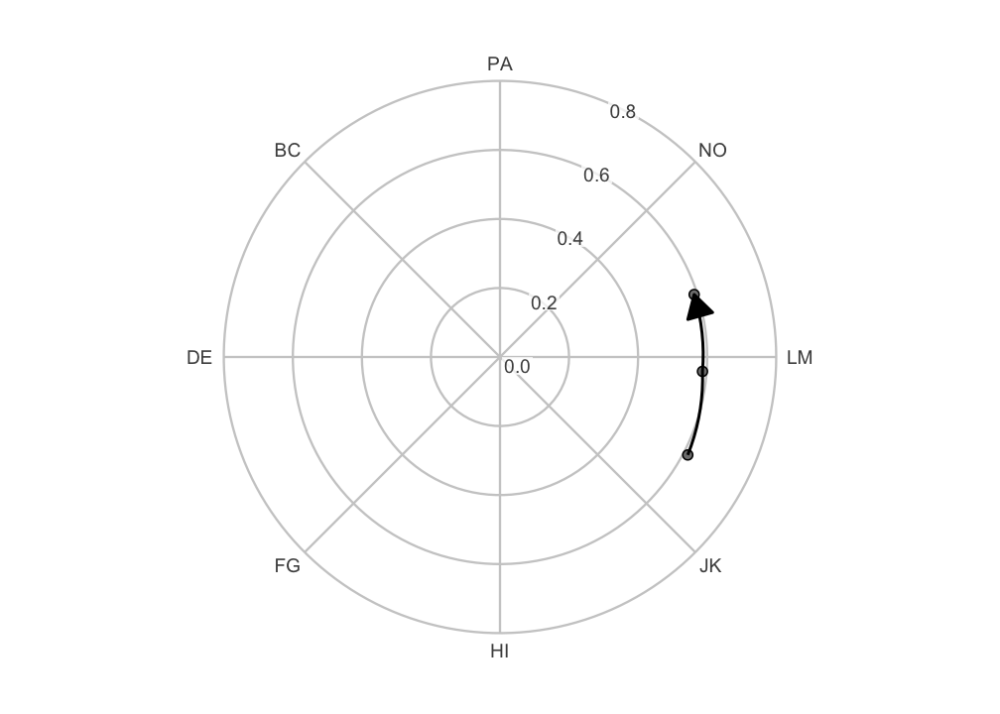
The arrowhead marks the direction of time. Note what the layer does
at the boundary. The estimated profile moves from about 332 to 355 to 21
degrees. The step from the second to the third wave is drawn as the
short arc of about 26 degrees across the 0/360 pole. It is not drawn as
a sweep of about 334 degrees the long way round. The path is curved
because coord_circumplex() munches each segment along the
polar geodesic: it splits the segment into short pieces that bend with
the circle. The layer supplies the ordering, not the drawing.
Occasions are connected in the order the rows appear in the data,
exactly as geom_path() does. Mapping group
draws one path per series. When you assemble a data frame by hand, sort
it into time order first. For the reason noted above, sorting occasion
labels as text puts T10 before T2 and silently
reverses time. ssm_plot_circle(), shown next, does that
sorting for you.
The same figure is available ready-made from
ssm_plot_circle(), which adds the path to its usual points
and confidence wedges:
ssm_plot_circle(results_long, path = TRUE)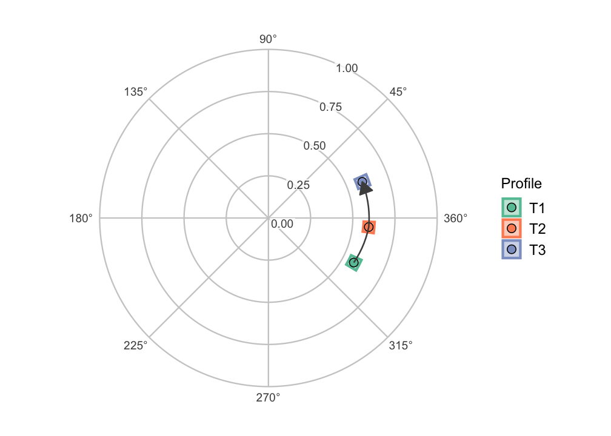
An occasion whose displacement is undefined (a flat or zero-amplitude profile) breaks the path rather than being interpolated through. The segment after the gap is still drawn on the correct branch. A path that skipped such an occasion would draw a movement that never happened.
8. The angle axis for linear plots
Not every circumplex figure is circular. The score-by-angle curve
drawn by ssm_plot_curve() is a linear plot whose x-axis
runs through the scale angles. scale_x_circumplex() labels
that axis consistently with the circular canvas: by default with the
angle in degrees, or with custom labels or an instrument’s
abbreviations.
The example below draws a made-up profile at the octant angles:
angles <- octants()The data frame curve has one row per angle in
angles, in its angle column. Its
score column follows a cosine curve with elevation 1,
amplitude 0.8 and displacement 135 degrees. (The code that builds
curve is omitted.)
ggplot(curve, aes(x = angle, y = score)) +
geom_line() +
geom_point(size = 2) +
scale_x_circumplex(angles, labels = PANO()) +
labs(x = "Scale", y = "Score") +
theme_bw()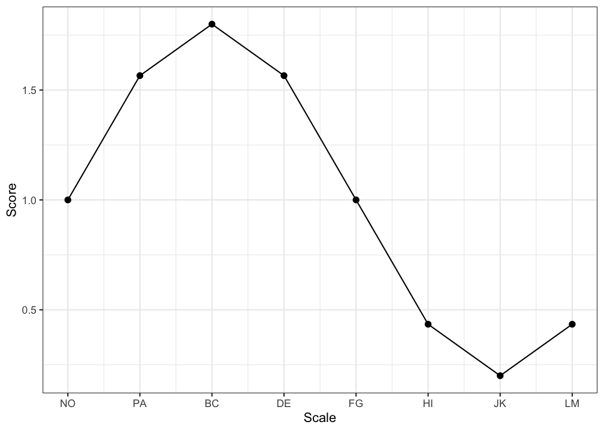
Pass the same labels (or the same
instrument) to both ggcircumplex() and
scale_x_circumplex(). This guarantees that a circular
figure and a linear one label their scales identically.
9. Relationship to the built-in plots
The built-in plotting functions are implemented on exactly these
components: ssm_plot_circle() is
ggcircumplex() plus geom_ssm_arc() and
geom_ssm_point(). It also moves the amplitude axis to a gap
that holds no point. ssm_plot_curve() uses
scale_x_circumplex() for its angle axis. So you can always
start from a built-in plot and add to it, or rebuild it from the pieces
when you need finer control. Whichever route you take, the coordinates
are computed the same way, so the results line up. Only the amplitude
axis can differ: to put it where ssm_plot_circle() puts it,
pass r_axis_angle to coord_circumplex(), as in
the path figure above.
Wrap-up
Every built-in circumplex figure is a composition of the same parts.
ggcircumplex() or coord_circumplex() draws the
canvas, and geom_ssm_point() and
geom_ssm_arc() draw the profiles.
scale_x_circumplex() labels a linear angle axis, and
theme_circumplex() styles the canvas. Start from a built-in
plot and add to it, or rebuild it from the pieces. No page follows this
one. To estimate how a profile moves across waves before you draw it,
read “Growth Models on SSM Parameters”.
References
Gurtman, M. B. (1992). Construct validity of interpersonal personality measures: The interpersonal circumplex as a nomological net. Journal of Personality and Social Psychology, 63(1), 105–118.
Wright, A. G. C., Pincus, A. L., Conroy, D. E., & Hilsenroth, M. J. (2009). Integrating methods to optimize circumplex description and comparison of groups. Journal of Personality Assessment, 91(4), 311–322.
Zimmermann, J., & Wright, A. G. C. (2017). Beyond description in interpersonal construct validation: Methodological advances in the circumplex Structural Summary Approach. Assessment, 24(1), 3–23.